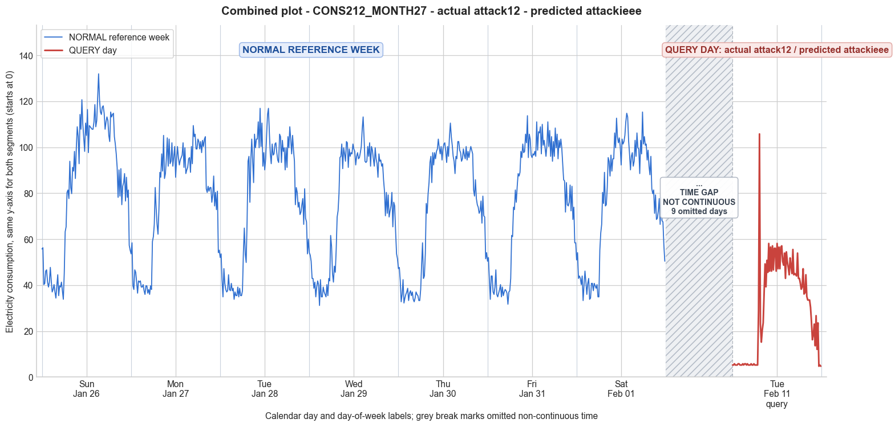

CONS212_MONTH27 · actual attack12 · predicted attackieee
- Pair
- CONS212_MONTH27
- GT
- attack12
- Prediction
- attackieee
- Binary GT
- attacked
- Binary Prediction
- attacked
- Source
- E010
- Parse
- stored
- Date
- 2014-02-11
- Weekday
- Tuesday
- Latency
- 2.42 min
- Tokens
- 10180

Final output
Classification: - Manipulated Identified Attack: - Most Likely: Attack IEEE - Confidence: Medium - Reasoning: The query day exhibits an irregular pattern where many 15-minute intervals report a constant minimal value (5.24 or 5.76) instead of the real consumption, while other intervals show consumption values consistent with the reference profile (e.g., a brief spike to 105.81 and fluctuations in the 15–58 range). This matches the IEEE attack definition of substituting either true consumption or a fixed substitute (typically zero) on a per-interval basis. The absence of true zeros is a minor deviation—likely due to a meter firmware floor or a deliberate low injection—but the binary behavior (real vs. substituted) and the resulting distorted trend and amplitude align with Attack IEEE. Attack 2 (on-off with zeros) was ruled out because no samples are zero. Attack 4 (periodic reduction) was considered but the prolonged stretch of nearly constant low values does not resemble a simple scaling or subtraction over a period; it points to a replacement mechanism. Attack_Behavior_Explanation: - The attacker alternates between reporting the actual consumption and injecting a low constant value (around 5.24) for individual 15-minute intervals. Approximately the first third of the day is entirely replaced by the low constant, suppressing the morning ramp. A short genuine spike appears mid-morning, followed by a mix of real and substituted readings throughout the rest of the day. Compared to the normal week, overall magnitude is drastically reduced (mean dropping from ~77 to 30), and the temporal trend is severely altered—the smooth day/night pattern is replaced by abrupt jumps between true usage and the artificial floor. This manipulation is consistent with false data injection, where the attacker tampers with reporting logic to send precomputed low values at selected intervals, possibly to mimic a partial meter bypass or report fraudulent minimal usage.
Prompt
You are a domain expert in smart grid security and electricity theft analysis, with deep knowledge of non-technical loss (NTL) attack patterns in smart meters. You are given: 1. A plot of one week of original (normal) energy consumption for a smart meter, provided as context for the customer's typical consumption behavior. 2. A plot of one day of energy consumption for the same smart meter, which may or may not be manipulated. Below are common attack types, each defined by how consumption values are altered, their impact on magnitude and trend, and their possible technical causes. Attack 0: Generated by replacing all electricity consumption samples with zero values for the entire observation duration. Simulates a scenario where no energy usage is reported at all. May be caused by a total meter bypass or severe meter malfunction. Completely eliminates both the trend and magnitude of the consumption profile. Attack 1: Multiplies the actual energy consumption by a constant random value between (0,1). The lower the factor, the higher the severity. Can be triggered by meter bypass, magnetic interference, reverse current, and false data injection. The consumption trend remains the same but the magnitude is uniformly reduced. Attack 2: Generated by replacing consumption samples with zeros for a random duration. Also known as an on-off attack. Can be caused by full meter bypass, false data injection, and reverse current. Changes both the trend and amplitude. Attack 3: The actual consumption is multiplied by different random factors between 0 and 1, with a unique factor per sample. Similar to Attack 1 but the scaling factor varies per reading. Caused by meter bypass, magnetic interference, and reverse current. Changes both the trend and amplitude. Attack 4: Simulates energy theft over a randomly selected period within the observation window. All measurements in that period are reduced. Caused by meter bypass, magnetic interference, reverse current, and false data injection. Changes both the trend and amplitude. Attack 5: Each sample is replaced by a false value obtained by multiplying the average normal consumption by a random variable between 0 and 1, with a different variable per sample. Caused by false data injection. Produces a completely different pattern from the original consumption profile, changing both trend and magnitude. Attack 6: A random cut-off point is selected and all consumption values above it are replaced by that cut-off value. The attacker avoids exceeding a predefined maximum limit. Mainly caused by false data injection. Changes both the trend and amplitude. Attack 7: A random cut-off point is subtracted from each sample; if the result is negative, zero is reported. Similar to Attack 6 but replaces exceeding values with zero instead of the cut-off point. May be caused by false data injection or total meter bypass. Does not change the trend but reduces overall consumption. Attack 9: All samples are replaced by the average daily energy consumption, resulting in a flat constant profile. Easily detectable because constant consumption does not reflect normal customer behavior. Caused by false data injection. Eliminates all trends. Attack 10: Reverses the consumption pattern without reducing the total amount. Applicable when the electricity company uses time-varying pricing, allowing the attacker to shift high consumption to off-peak periods. Caused by false data injection. Changes the trend without decreasing total consumption. Attack 12: The attacker replaces their consumption pattern with that of a lower-consuming user. The legitimate user unknowingly pays the adversary's electricity bill. Caused by false data injection. Attack IEEE: For each 15-minute interval across the entire day, the consumer either reports the actual electricity consumption or substitutes it with zero. The result is a profile where some intervals reflect real consumption while others are zeroed out, creating an irregular pattern across the full day. May be caused by false data injection. Changes both the trend and amplitude. Given the two plots, determine: 1. Whether the day is attacked or original - compare the flagged day against the normal week and assess whether the consumption pattern is consistent with normal behavior or shows signs of manipulation. If the day is consistent with the customer's typical consumption behavior, classify it as original and provide no further analysis. If manipulation is detected, proceed to point 2. 2. Which attack type this most likely is - identify the single most probable attack and justify your choice based on how the flagged day deviates from the normal week. 3. The behavior of the identified attack - explain how the consumption values are manipulated, their impact on magnitude and trend, and the possible technical causes behind this type of attack. Output Format: Classification: - Original | Manipulated Identified Attack: (fill only if manipulated) - Most Likely: Attack X - Confidence: High | Medium | Low - Reasoning: Why it matches Attack X and why Attack Y and Attack Z were ruled out (list top 2 alternatives considered) Attack_Behavior_Explanation: (fill only if manipulated) - How consumption values are manipulated relative to the normal week - Impact on magnitude and trend - Possible technical causes
Reasoning content
We are given a week of reference data for a meter, and a query day (DAY_ID=2). The query day statistics show significantly lower mean (30.36) compared to the reference week days (all above 74). The min is 4.71 and max 105.81, but the max appears to be an outlier? Let's examine the query day readings. The readings start with many low values around 5.24 and 5.76, then a jump to 28.81, 105.81, then drop to 23.05, etc. The pattern: a series of very low constant values (5.24, 5.76), then a spike to 105.81, then back to lower values but still higher than the baseline. This does not look like a typical consumption pattern from the reference week. The reference week days show a clear pattern: low at night, then rising in the morning, peaking around midday/afternoon, then declining. But the query day has an extended period of near-zero consumption (actually very low, not zero) at the beginning, then a sudden spike, then a choppy pattern. The overall mean is much lower. The minimum is 4.71, not zero, so not Attack 0 (all zeros). There are zeros? Actually, no readings are zero; the lowest is 4.71, so not exactly zero. But the description of Attack 0 says "replacing all electricity consumption samples with zero values". That would be all zeros, but here we have non-zero values. Attack 2 (on-off attack) replaces samples with zeros for random duration. Here we have no zeros, but very low values that are not quite zero. However, the values 5.24, 5.76 are suspiciously constant and low. In the reference week, nighttime lows are around 30-40. Here, the low values are around 5. So that's a drastic reduction, but not zero. Could be a scaling attack? Attack 1 multiplies by a constant random factor between 0 and 1, preserving trend but reducing magnitude. Here, the trend might be somewhat preserved? The query day has a long flat period at the start, then a spike, then a messy pattern. The reference week days show a smooth rise and fall. The query day spike to 105.81 is similar to peaks in reference days (around 100-130). So the spike is not reduced, but the rest is drastically reduced. That doesn't match a constant scaling factor. Attack 3 multiplies by different random factors per sample. That could produce a distorted trend and varying amplitude. Attack 4 reduces measurements in a randomly selected period. That could leave some periods untouched (like the spike) and reduce others. But the reduction might be to very low values, but not necessarily constant. Attack 5 replaces each sample with a false value obtained by multiplying the average normal consumption by a random variable between 0 and 1. That would produce a random pattern unrelated to original, with mean around half the average. Here, the mean is 30.36, while reference mean around 77. So about 0.4 of the average, which could fit a random multiplications of the average. But the pattern: there is a long stretch of constant-ish low values (5.24, 5.76) then a spike. That doesn't look like random values from a uniform distribution; it looks like some samples are genuine and others replaced by a low constant. Attack 6: random cut-off point, all values above it replaced by that cut-off. That would result in a ceiling effect; many values capped at a certain value. Here, there is a spike to 105.81, so no ceiling. Attack 7 subtracts a cut-off, replacing negative with zero. That would reduce values uniformly, but not set a constant low floor. Attack 9: all samples replaced by average daily consumption (constant). That would be a flat line, not the case. Attack 10: reverses pattern, but total consumption same; here total consumption is much lower (mean 30.36 vs ~77, so total reduced). Attack 12: replaces with lower-consuming user's pattern. This pattern is strange: long period of very low constant values, then a spike, then moderate values. It looks like an on-off attack but without zeros. Attack IEEE: each 15-min interval either actual or zero. That would result in some intervals being genuine and others zero. Here, we have no zeros, but very low non-zero values. So that doesn't fit. Maybe the attack type is not exactly listed? The provided types include Attack 0-7,9,10,12, IEEE. There is no Attack 8 or 11. But we must choose the most likely among given types. The data: Query day has many values at exactly 5.24 and 5.76 repeatedly at the start. These are suspiciously specific. In the reference week, no values are that low; the lowest minimum across days is 31.15. So these are artificially low. They could be a constant scaling factor? If we assume actual night consumption is around 40-50, then multiplying by a factor of about 0.1 would give 4-5. But they are not exactly proportional; they alternate between 5.24 and 5.76. Could these be the average daily consumption multiplied by some factor? The overall mean of reference days is around 77. 5.24 is about 6.8% of 77. Not obviously constant fraction. Alternatively, they could be replacements with a fixed low value, like a cutoff subtraction? Not exactly. Let's examine the whole query day sequence: 5.24, 5.24, 5.76, 5.24, 5.24, 5.24, 5.76, 5.76, 5.24, 5.24, 5.24, 5.76, 5.24, 5.76, 5.76, 5.24, 5.76, 5.24, 5.24, 5.24, 5.76, 5.24, 5.24, 5.76, 5.24, 5.24, 5.24, 5.24, 28.81, 105.81, 23.05, 15.19, 20.43, 23.57, 36.67, 49.24, 39.29, 50.81, 45.57, 58.15, 46.10, 56.57, 46.10, 57.10, 46.62, 56.05, 56.05, 46.10, 58.15, 47.15, 56.57, 47.15, 56.57, 57.10, 50.29, 48.72, 53.95, 42.95, 54.48, 50.29, 47.67, 44.53, 51.86, 48.19, 45.05, 55.53, 44.53, 45.05, 44.53, 44.00, 53.95, 42.95, 42.95, 40.86, 38.24, 39.29, 47.15, 36.14, 36.67, 44.53, 35.10, 33.53, 33.53, 33.53, 30.38, 24.10, 16.24, 18.33, 23.05, 13.62, 26.72, 12.05, 23.57, 4.71, 5.24, 4.71 Notice that the first 28 readings (until index 27, 0-based) are all 5.24 or 5.76, with one 5.24 at index 24,25,26,27? Actually indices: 0:5.24,1:5.24,2:5.76,3:5.24,4:5.24,5:5.24,6:5.76,7:5.76,8:5.24,9:5.24,10:5.24,11:5.76,12:5.24,13:5.76,14:5.76,15:5.24,16:5.76,17:5.24,18:5.24,19:5.24,20:5.76,21:5.24,22:5.24,23:5.76,24:5.24,25:5.24,26:5.24,27:5.24, then 28:28.81, 29:105.81. So a long period of very low, alternating but mostly 5.24. Then a sudden spike to 105.81. Then values from 30 onwards: 23.05, 15.19, 20.43, 23.57, 36.67, 49.24, etc. These later values seem more plausible as actual consumption, though the pattern is erratic. The reference week shows that daytime consumption often peaks over 100, and nighttime lows around 30-40. In the query day, the low after the spike goes down to 15.19, then climbs to 58.15, then fluctuates around 40-58. Toward the end, it drops to 4.71 again. So it's like an on-off attack but with a fixed low value (around 5.24) instead of zero, and some genuine segments. Attack IEEE defines: "For each 15-minute interval across the entire day, the consumer either reports the actual electricity consumption or substitutes it with zero." But here, it's substituted with a very low value, not zero. If we consider that 5.24 could be a "zero" replacement (maybe a minimum reading or a bypass value), it could still be an on-off pattern. Attack 2: "replacing consumption samples with zeros for a random duration". Here, it's not zeros but a constant low value. So it's similar but with a non-zero floor. However, the description says "zeros". Could it be Attack 4? "Simulates energy theft over a randomly selected period within the observation window. All measurements in that period are reduced." It doesn't specify how reduced; it could be a fixed low value. But Attack 4 says "all measurements in that period are reduced." That would mean the period's values are reduced but not necessarily set to a constant. Here, the first 28 samples are almost constant 5.24/5.76, which suggests a fixed reduction or replacement. Attack 5: random values from average times random factor; that would not give such constant values. Attack 6/7 involve cutoffs, no. So the closest is a variant of Attack 2 or Attack IEEE, but with a non-zero substitute. Maybe there is a "zero" in the sense of near-zero? But 5.24 is not zero. The meter could have a minimum reading threshold. However, we must classify among the given types. Attack 0 is zeros everywhere, not this. Attack 1 is constant multiplier; here the spike at 105.81 is similar to reference peaks, so if it were a constant multiplier, the peak would be reduced. For example, if factor is 0.5, peak would be ~50, not 105. So not Attack 1. Attack 3 (varying factor per sample) could produce some high values and some low, but the long sequence of almost identical low values (5.24,5.76) suggests a deliberate replacement, not a random factor on each true reading. Attack 4 could be a period of reduction; the low period might be the first part, but the reduction is so severe that it's almost a constant floor. Attack 4 doesn't specify a constant replacement, but it could be that the reduction formula is something like max(0, reading - large constant) resulting in a floor. But here values are around 5, not zero. Attack 7 subtracts a cut-off, negative to zero; that would result in many zeros, not 5.24. So not that. Attack IEEE is about substituting with zero or actual. Here, there is no zero, but maybe the attacker intended to zero out but due to some noise or meter minimum, it reports 5.24? That's a stretch. Alternatively, maybe the attack is a combination? But we must pick the single most probable. Let's examine the query day more: After index 28, the values jump to 28.81 then 105.81, then 23.05, etc. These look like actual consumption readings with some variability. The reference day 2 for the same DAY_ID=2 (which is Tuesday? Dow=1 for query day, and reference week Day 2 has dow=1) might be comparable. Reference week Day 2 (dow=1, Tuesday) has min=33.83, max=116.97, mean=77.50. Its pattern: starting around 52, dipping to 33.83 at index 15? Actually reference Day 2: 52.01, 53.62, 42.39, 34.90, 47.20, 40.78, 38.11, 37.04, 37.57, 44.53, 38.11, 37.57, 40.78, 37.57, 38.64, 33.83, 37.04, 35.44, 35.44, 39.18, 34.90, 38.64, 35.44, 35.44, 37.57, 54.15, 64.85, 53.62, 49.88, 68.06, 93.93, 96.07, 76.08, 94.46, 103.58, 94.46, 84.64, 105.72, 99.82, 103.58, 103.58, 111.08, 99.82, 116.97, 100.36, 110.55, 91.79, 97.68, 90.18, 95.00, 105.18, 114.30, 116.97, 106.26, 97.15, 92.86, 101.43, 96.61, 97.15, 101.43, 101.97, 97.68, 94.46, 93.39, 105.72, 104.65, 93.39, 103.04, 98.21, 99.82, 90.18, 99.82, 91.25, 104.65, 99.82, 108.94, 103.58, 97.15, 105.18, 98.75, 93.93, 75.01, 82.50, 80.36, 73.94, 76.08, 70.73, 71.80, 75.01, 77.69, 66.46, 81.97, 69.13, 67.53, 53.62, 60.04 So reference Day 2 has nighttime lows around 33-40, then a rise after index 24 to 54, then peaks around 100. In the query day, the first 28 samples are all ~5.24-5.76, which is far below the reference. Then sample 28:28.81, 29:105.81. So it's like the attacker replaced the first part (nighttime) with a very low constant, then allowed a short genuine spike, then a mix? After the spike, values range from 15 to 58, which are still lower than reference but not as drastically. For example, reference at similar times (mid-morning to afternoon) would be 70-100, but query day shows 30-58. So the reduction extends beyond the initial flat period. However, the later part (index 40 onwards) has values around 40-58, which are more plausible as reduced actuals, while the first part is a flat line. This looks like an attack where some intervals report actual (or slightly reduced) and others report a fixed low value. That matches the IEEE attack definition except the fixed low is not zero but a very small non-zero value. The IEEE attack description says "substitutes it with zero", which is explicit about zero. In many NTL datasets, there is an attack type that replaces with a fixed low value or zero. Since we must pick among the given, perhaps Attack IEEE is the closest because it involves a binary selection between real and a fixed substitute. The substitute is not zero but a minimal reading. Could be due to a partial bypass or a meter that is tampered to report a minimum value. The description says "may be caused by false data injection". If the attacker injects a false value of, say, 5.24 for some intervals, that fits. So I'll consider it as Attack IEEE with the zero replaced by a low constant. But let's verify other attacks: Attack 2 (zeros for random duration) would produce long stretches of zeros. Here we have no zeros, but stretches of low constant. If we relax "zeros" to "near-zero constant", it's similar. However, Attack 2 specifies "replacing consumption samples with zeros". So it's zero. Attack IEEE also specifies zero. Both are not exactly matching because there are no zeros. However, we might consider that the attack is a variant of Attack 1 with a very small multiplier? But the flat segment at 5.24 does not follow the original profile; the original night profile had variation between 33 and 53. A constant multiplier would preserve variation, not flatten it. So that rules out Attack 1 and Attack 3 (which also multiplies each sample by a random factor, would preserve some shape). Attack 4: reduction over a period. If the reduction is done by scaling or subtracting, it might flatten but not to a constant. Attack 5: average consumption times random factor, that gives random noise, not a clear spike at 105.81 that matches original peaks. Attack 6: cut-off would cap values, not introduce a floor. Attack 7: subtract cut-off, negative set to zero, would yield many zeros and positive values reduced uniformly, not a constant floor. Attack 9: constant average, flat line. Attack 10: reversal, total same, not. Attack 12: another user's pattern, could be anything. So the presence of a long constant segment (5.24/5.76) suggests either Attack 0 if it were all zeros, but it's not, or an attack that replaces some intervals with a fixed minimal value. Attack IEEE is the only one that mentions substituting with a fixed value (zero) for some intervals. If we interpret that as a substitution with a non-zero constant due to physical constraints (e.g., the meter cannot report exactly zero when bypassed but shows a small residual), then it fits. Thus, I'll classify as Manipulated, Attack IEEE, with reasoning that many intervals report a minimal value (consistent with a substitute value near zero) while others show real consumption, leading to an irregular pattern with reduced magnitude and altered trend. Confidence: Medium, because the substitute value is not zero, but 5.24, so it's a slight deviation from the strict definition. Alternative attacks considered: Attack 2 (on-off with zeros) and Attack 4 (periodic reduction). For Attack 2, it's ruled out because there are no zeros. For Attack 4, the constant floor over a long period is not typical of a simple reduction; it seems like a deliberate insertion of a fixed value. So IEEE is the best match. Now output the required fields.